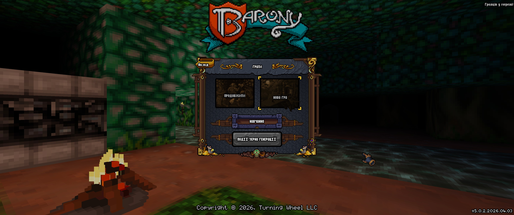
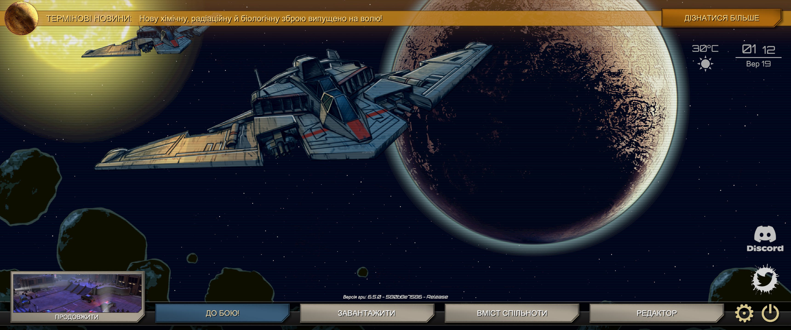

Barony
Фентезійна гра про дослідження підземель. Українська локалізація встановлюється як мод.
Жанри: рольова гра · roguelike · дослідження підземель
17 678 рядків0% вичитано
Каталог перекладів
Тут зібрані публічні українські локалізації UKA Localization. Відкрийте сторінку гри, щоб дізнатися про стан перекладу та спосіб встановлення.
Посилання для підтримки з’являться тут після налаштування цих майданчиків.

Фентезійна гра про дослідження підземель. Українська локалізація встановлюється як мод.

Стратегія за мотивами «Зоряного десанту». Локалізація додає українську до списку мов гри.
За вашим запитом ігор не знайдено.
Допомогти без донату
Допомога з локалізаціями не обов’язково потребує грошей. Ви можете вичитувати тексти, перевіряти переклад у грі, повідомляти про помилки або допомагати з технічною частиною.